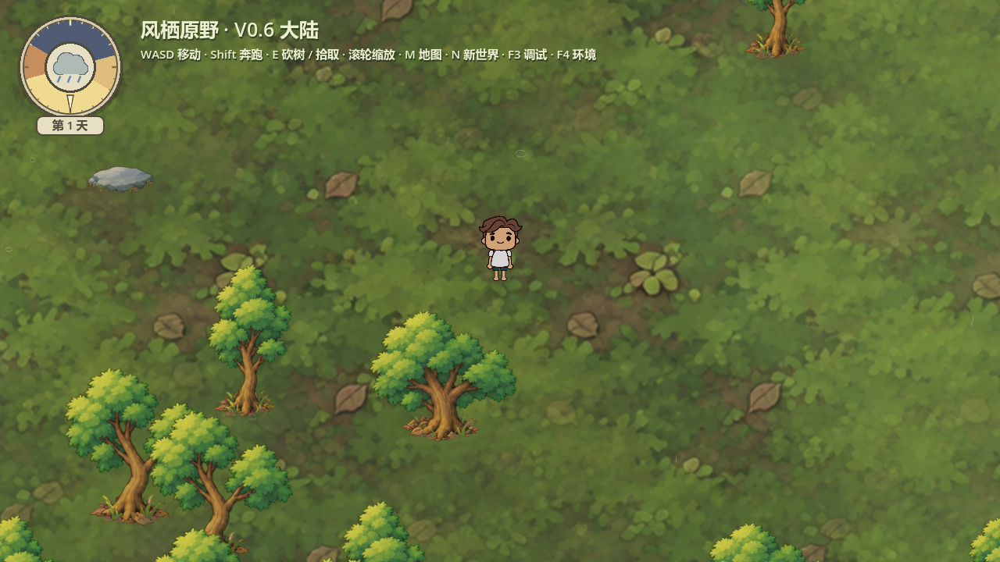
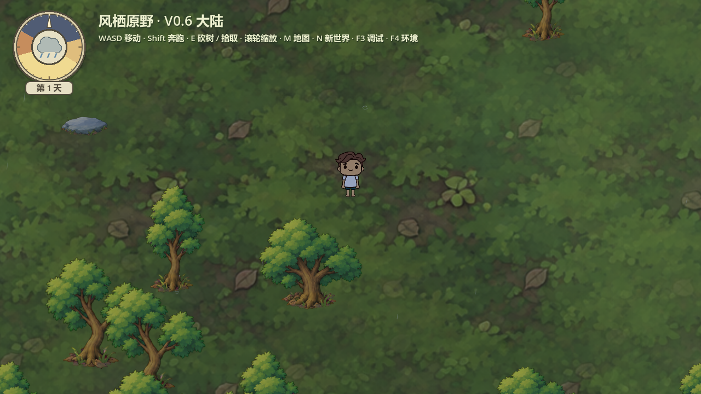
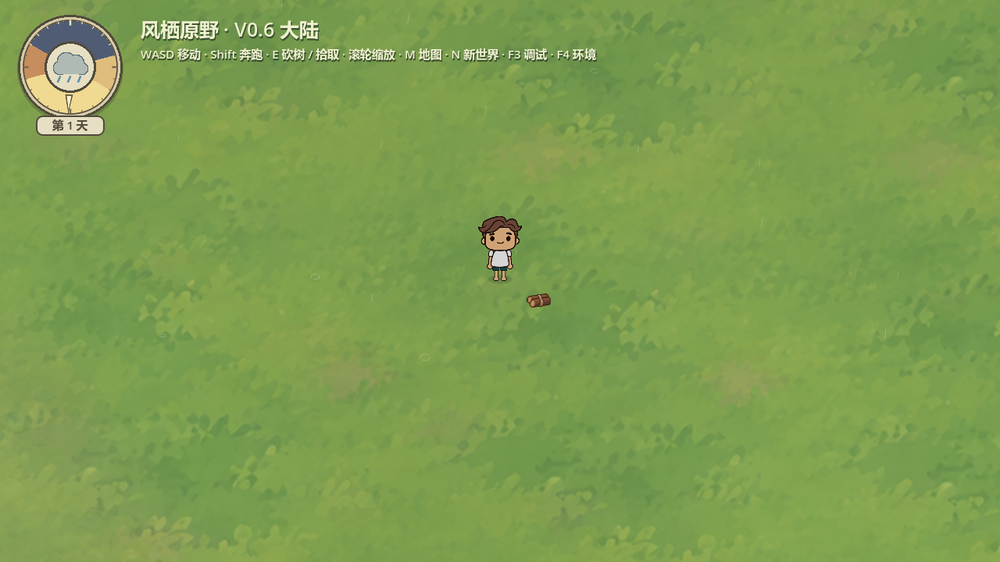
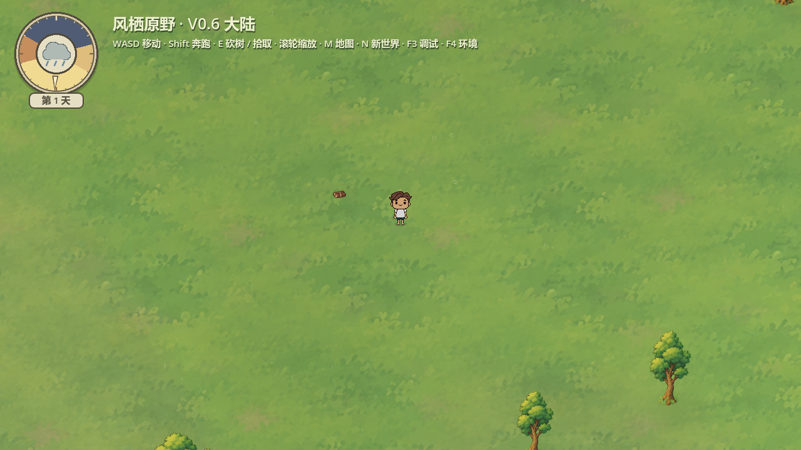
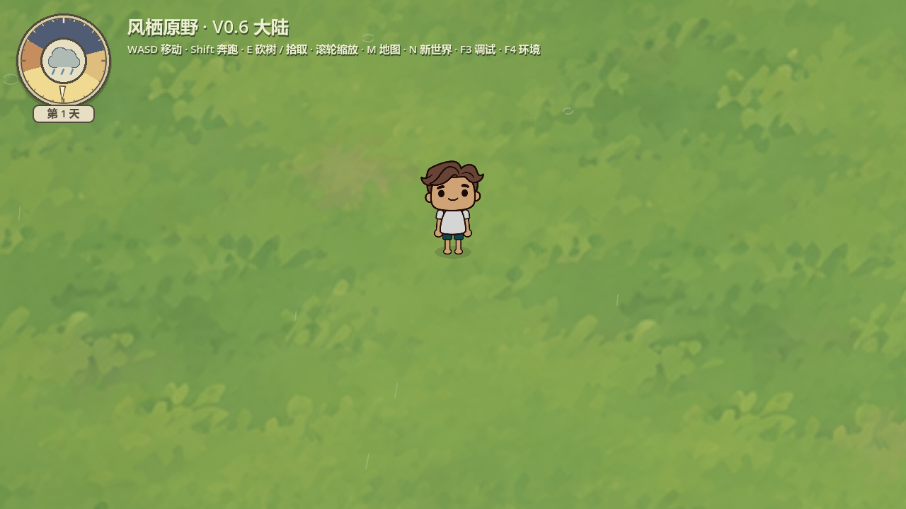
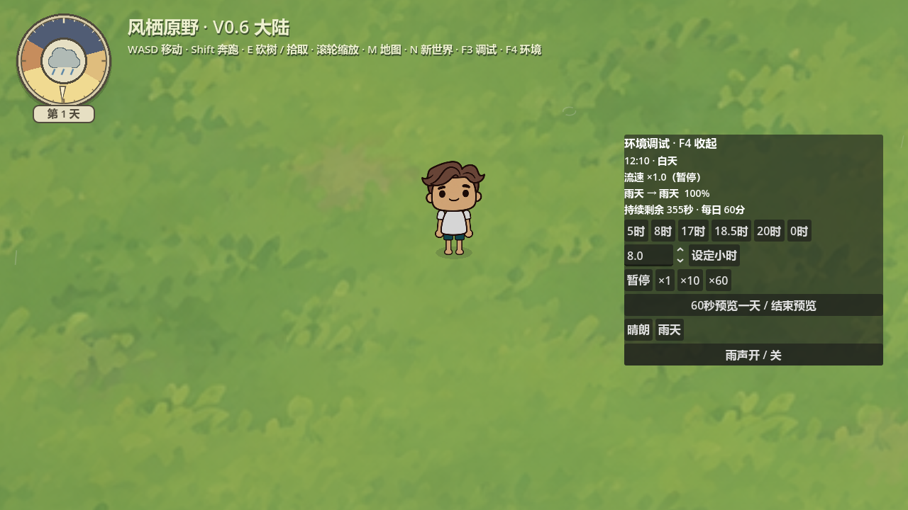

双击项目根目录 Start-Playtest.cmd 试玩，F4仅保留晴朗和雨天，25秒直接渐变。左上圆盘和昼夜保持，旧环境存档自动迁移。
雨丝随机位置和间隔；固定96雨丝槽、32落地槽，仅绘制镜头附近。落地白色断弧在水平地面扩散，位于角色与树石下方。
16秒立体声原创合成水滴短音，极弱柔和底声，替代密集持续噪声。下方是满雨量音源试听，游戏内会随雨量和音量淡入；主观听感请以游戏试听为准。
专项结果：39项、0失败。Godot4.7.2 / Compatibility / RTX5060，180帧已加载森林雨景，60FPS限帧，帧间隔中位16.629ms、P95 16.763ms；样本最多24条雨丝/14组弧线，无每滴节点。此为短时场景样本，非全地图探索性能承诺。





